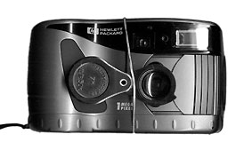

Цветок клевера
Фотография сделана камерой HP C200 (1 мегапиксель) 2000-06-11. Это один из первых цифровых фотоаппаратов со сдвигающейся крышечкой на объективе. По внешнему виду он похож на плёночные мыльницы .
Чтобы получить макро с достаточно маленького расстояния я использовал лупу 4x-20x, прикреплённую к камере резинкой. Поэтому края кадра получились частично закрыты, частично нерезкие.
Позже я делал резкие снимки клевера, но этот чем-то красивее. Этой же камерой через лупу сфотографирован маленький белый лесной цветок. Это был мой первый цифровой фотоаппарат. Я много и с удовольствием им фотографировал.

HP-c200